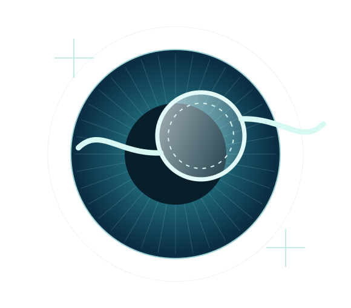

인공수정체 탈구,
기존 렌즈의 보존까지
함께 고민합니다.
다초점 인공수정체 탈구 · 인공수정체 공막고정술 · 자연수정체 탈구. 정밀한 진단으로 렌즈의 위치와 구조를 평가하고 환자에게 적합한 치료 방향을 찾습니다.

수정체 탈구와 인공수정체 탈구, 정확히 구분하여 접근합니다.
이름은 비슷하지만 질환의 원인, 검사와 수술 방법이 서로 다릅니다.
기존 인공수정체의 재고정 또는 교체
탈구된 인공수정체가 모두 같은 치료를 받는 것은 아닙니다. 기존 렌즈의 종류·상태와 안구 조건을 살펴 선택합니다.
기존 렌즈 재고정
상태가 양호한 인공수정체는 수술적 재위치 및 공막고정을 고려할 수 있습니다.
인공수정체 교체
손상되었거나 재고정이 적합하지 않은 경우 다른 인공수정체로 교체할 수 있습니다.
수술보다 먼저, 정확한 평가
시력과 렌즈 위치뿐 아니라 각막·망막·유리체·지지조직의 상태까지 함께 확인합니다.
병력·증상 확인
기존 백내장 수술과 렌즈 종류, 시력 변화 확인
정밀 안과 검사
세극등, 안저 및 필요 검사로 위치와 합병증 평가
수술 방법 결정
보존적 관찰·재고정·교체 가능성 논의
수술 후 경과 관찰
안압·염증·렌즈 중심·망막 상태 확인
임상 진료와 연구 경험을 바탕으로
예스안과의원 의료진 정보를 확인하시고 현재 상태에 맞는 진료를 상담하세요.
자주 묻는 질문
환자분이 진료 전 많이 궁금해하시는 내용을 정리했습니다.
인공수정체가 탈구되면 반드시 교체해야 하나요?
반드시 그렇지는 않습니다. 인공수정체의 종류와 상태, 지지 조직, 망막 상태 등에 따라 기존 렌즈 재고정 또는 교체 여부를 결정합니다.
다초점 인공수정체가 탈구되면 기존 렌즈를 살릴 수 있나요?
일부 환자에서는 기존 다초점 인공수정체의 재고정이 가능합니다. 렌즈 디자인과 손상 여부, 위치 등을 평가해야 합니다.
수정체 탈구와 인공수정체 탈구는 같은 질환인가요?
다릅니다. 수정체 탈구는 본래의 자연수정체 위치 이상이고, 인공수정체 탈구는 백내장 수술 후 삽입된 인공수정체의 위치 이상입니다.
갑자기 시력이 떨어지고 렌즈가 움직이는 느낌이 들면 어떻게 하나요?
시력 저하나 통증, 심한 충혈, 번쩍임 또는 비문증의 갑작스러운 증가가 있다면 지체하지 말고 안과 진료를 받으세요. 급격한 증상에는 망막 등 다른 문제의 평가도 필요합니다.